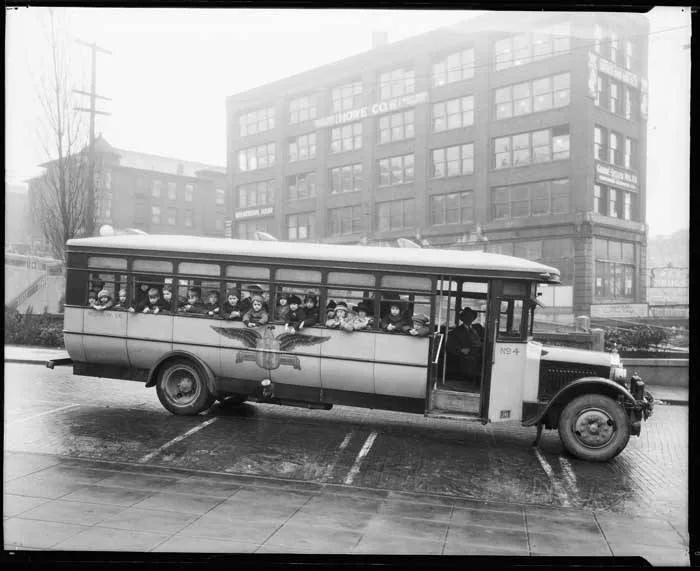

Big Bus Stop Ride-Along
A row of chairs is the bus and it never moves an inch: the driver calls the stops, riders pay one big token, ride, and get off at their stop.
Ages 3–315–20 min4 materials
- Ages
- 3–3
- Group
- 4–14 kids
- Time
- 15–20 min
- Where
- Indoors
- Prep
- Some prep needed

Setup
Build the bus yourself and sit in every seat before the riders arrive: chairs steady, close enough to feel like a bus, far enough that small knees are not pressed into the seat ahead, with a clear aisle a token-carrying three-year-old can walk without squeezing past a single knee. Stand the stop signs along the aisle in an order you can call without thinking, and audit the tokens like the safety equipment they are: palm-sized, single-piece, boring to a mouth. The driver's wheel must be light enough that a dropped wheel is a noise, never an injury.
Materials
- sturdy chairs in one row with an aisle (the bus. One seat per rider plus the driver's chair at the front, turned to face the row)
- one big steering wheel for the driver (a big plastic plate or a cardboard wheel the adult has made. Blunt, light, unbreakable)
- big ride tokens, one per rider per ride (palm-sized wooden discs or big bottle-top-free counters, audited, nothing small, nothing cracked)
- three or four big stop signs, adult-drawn (a star stop, a tree stop, a fish stop, a moon stop, big simple pictures on card, stood along the aisle)
Steps
- Point at the bus and say the plain framing: 'This bus goes on a very particular route. It stops at the star, the tree, the fish, and the moon, and it never, ever moves. WE do the travelling: getting on, paying our token, riding, and getting off at our stop.' State the route's laws whole: 'Riders sit while the bus is travelling. Tokens are paid to the driver, one each, in a flat open hand. Getting off happens only at YOUR stop, when the driver calls it.' Take the driver's chair for the first run yourself.
- First boarding together: riders line up at the bus door (the aisle's front) holding one token each, and board one at a time. Token into the driver's flat hand, 'One ride, please' in any words or none, then walk the aisle and choose a seat. Boarding IS the first curriculum: paying, choosing, sitting, in a line that waits. When every rider is seated, the driver makes the travelling noise (a low hum the riders may join) and calls the first stop: 'STAR STOP. Star riders, this is your getting-off place.'
- The ride round: before each run, every rider has quietly been given a stop by the driver, whispered, or shown the matching small sign, and the game's whole delicious tension is listening for YOUR stop while other stops are called and other riders rise, walk the aisle forward, hand the driver a 'thank you' in any form, and step off onto the pavement chairs to watch the rest of the route. A rider who rises at the wrong stop gets the driver's kindest line, which is also the rule restated: 'Not yet. That's the FISH stop. Your moon is coming. The bus will wait.' Sitting back down is a complete, respected move, never a failure.
- Driver's turn, the round everyone waits for: a rider becomes the driver. Wheel in hands, the hum to make, the stops to call in order with the adult beside them as the conductor, whose whole job is supplying the next stop's name quietly and applauding the calls publicly. Calling a full route clearly, in order, for passengers who are depending on you, is public speaking at its smallest true size, and the record treats it with that respect.
- Finish with the bus parked for the day: the last route ends at the MOON STOP for everybody. 'End of the line. Everybody off. The bus sleeps here tonight'. Tokens are counted back into their tin by the riders one at a time (the count said aloud to its true number), the wheel is hung on its peg by the driver, and the chairs go back to being chairs one rider at a time, carried or pushed in the adult's company. The tell-back: 'Four stops, three drivers, and not one rider left riding forever.'
Variations
Easier: A two-stop bus: star stop and moon stop only, a short route, new riders, the whole arc, pay, ride, listen, alight, inside fifteen minutes.
Harder: A request-stop version: riders may ring for their stop by raising a hand and saying 'stop, please' as the bus 'approaches'. The driver must watch the whole bus, not just the route.
⚠️ Safety
The bus never moves and neither do its seats: chairs are checked steady before every run, riders sit fully while travelling is being called, and all walking happens in the clear aisle at walking pace, a running rider on a chair-row bus is the session's one real hazard, so the driver's calls pace the whole game and a route pauses kindly if feet hurry. Tokens are palm-sized, single-piece, and audited before every session; anything small, cracked, or coin-shaped enough to invite a mouth leaves the tin permanently. The wheel is light and blunt, held in two hands, and stays in the driver's chair: it is never carried round the room.
🤝 Inclusion notes
Every job on the route exists at more than one height: the driver's chair takes any driver, the conductor's prompting works in words, signs, or a tapped order card, and a rider can travel the whole route from a seat that is already theirs, placed in the row like any other seat, paying and alighting by the same calls. A rider who communicates their stop by holding up its picture sign has called it in full; the driver answers every form of 'that's mine' identically. The token can be paid hand to hand, slid across the driver's tray, or dropped in the driver's tin. The fare is the handing over, in whatever form the hand offers.
⭐ Tried this? Rate it
Your ratings live in this browser only. Nobody else can see them. There are no community ratings here; every star on this card is yours.
Rate this activity, add a note, or write a reflection
✏️ Quick reflection
Optional, saved with your rating, and exported with "📋 Copy my week".
Full activity card,